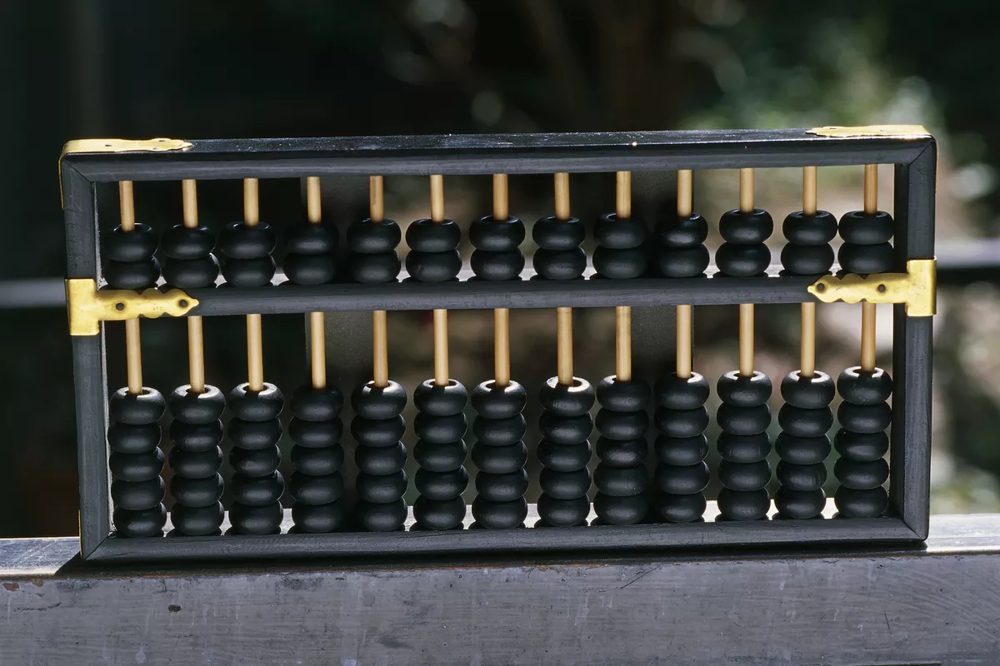

Actually, speaking electronic data processing does not go back more than just half a
century i.e. they are in existence merely from early 1940’s. In early days when our
ancestor used to reside in cave the counting was a problem. Still it is stated becoming difficult.
When they started using stone to count their animals or the possession, they never knew
that this day will lead to a computer of today. People today started following a set of
procedure to perform calculation with these stones, which later led to creation of a digital
counting device, which was the predecessor the first calculating device invented, was known as ABACUS.
Development of computer:
The Abacus:
Abacus is known to be the first mechanical calculating device. Which was used to be performed
addition and subtraction easily and speedily. This device was a first develop Ed by the
Egyptians in the 10th century B.C, but it was given it final shape in the 12th century A.D. by
the Chinese educationists. Abacus is made up of wooden frame in which rod where fitted across
with rounds beads sliding on the rod. Its id dividing into two parts called ‘Heaven’ and ‘Earth’.
Heaven was the upper part and Earth was the lower one. Thus any no. can be represented by
placing the beads at proper place.
Napier's Bones:
As the necessity demanded, scientist started inventing better calculating device. In thus
process John Napier’s of Scotland invented a calculating device, in the year 1617 called the Napier
Bones. In the device, Napier’s used the bone rods of the counting purpose where some no. is printed
on these rods. These rods that one can do addition, subtraction, multiplication and division easily.
Pascal's Calculator:
In the year 1642, Blaise Pascal a French scientist invented an adding machine called Pascal’s
calculator, which represents the position of digit with the help of gears in it.
Leibnz Calculator:
In the year 1671, a German mathematics, Gottfried Leibniz modified the Pascal calculator and he
developed a machine which could perform various calculation based on multiplication and division as well.
Analytical Engine:
In the year 1833, a scientist form England knows to be Charles Babbage invented such a machine. Which
could keep our data safely. This device was called Analytical engine and it deemed the first mechanical
computer. It included such feature which is used in today’s computer language. For this great invention
of the computer: Sir Charles Babbage is also known as the father of the computer.
Generation of computer:
As the time passed, the device of more suitable and reliable machine was need which could perform our
work more quickly. During this time, in the year 1946, the first successful electronic computer called
ENIAC was developed and it was the starting point of the current generation of computer OF COMPUTER.
First generation:
ENIAC was the world first successful electronic computer which was develops by the two
scientists namely J. P. Eckert and J. W. Mauchy. It was the beginning of first-generation
computer. The full form of ENIAC is “Electronic Numeric Integrated and Calculator” ENIAC
was a very huge and big computer and its weight was 30 tones. It could store only limited
or small amount of information. Initially in the first-generation computer the concept of vacuum
tubes was used. A vacuum tube was such an electronic component which had very less work efficiency
and so it could not work properly and it required a large cooling system. Today, we carry more
computing power on our smartphones than was available in these early models. The following brief
history of computing is a timeline of how computers evolved from their humble beginnings to the
machines of today that surf the Internet, play games and stream multimedia in addition to crunching numbers.
Second generation:
As the development moved further, the second-generation computers knocked the door. In this generation,
transistors were used as the electronic component instead of vacuum tubes. A transistor is much smaller
in the size than that of a vacuum tube. As the size of electrons components decreased from vacuum tube
of transistor, the size of computer also decreased and it became much smaller than that of earlier computer.
Third generation:
The third-generation computers were invented in the year 1964. In this generation of computer,
IC (Integrated circuits) was used as the electronic component for computers. The development of
IC gave birth to a new field of microelectronics. The main advantage of IC is not only its small
size but its superior performance and reliability than the previous circuits. It was first
developed by T.S Kilby. This generation of computer has huge storage capacity and higher calculating speed.
Fourth generation: This is the generation where we are working today. The computers which we see around us belong
to the fourth-generation computers. ‘Microprocessor’ is the main concept behind this generation of computer.
A microprocessor is a single chip (L.S.I circuit), which is used in a computer for any arithmetical or
logical functions to be performed in any program. The honor of developing microprocessor goes to Ted Hoff
of U.S.A. He developed first micro-processor, the Intel 4004, as he was working for Intel Corporation,
U.S.A with the use of microprocessor in the fourth-generation computers, the size of computer become
very fast and efficient. It is evident that the next generation of computer i.e. fifth generation will be
developed soon. In that generation, computer will possess artificial intelligence and it would be able to
take self-decisions like a human being.